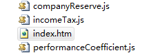

在前文中我们不止一次强调过模块化编程的重要性，以及其可以解决的问题：
① 解决单文件变量命名冲突问题
② 解决前端多人协作问题
③ 解决文件依赖问题
④ 按需加载（这个说法其实很假了）
⑤ ......
为了深入了解加载器，中间阅读过一点requireJS的源码，但对于很多同学来说，对加载器的实现依旧不太清楚
事实上不通过代码实现，单单凭阅读想理解一个库或者框架只能达到一知半解的地步，所以今天便来实现一个简单的加载器
加载器原理分析
分与合
事实上，一个程序运行需要完整的模块，以下代码为例：
1 //求得绩效系数 2 var performanceCoefficient = function () { 3 return 0.2; 4 }; 5 6 //住房公积金计算方式 7 var companyReserve = function (salary) { 8 return salary * 0.2; 9 }; 10 11 //个人所得税 12 var incomeTax = function (salary) { 13 return salary * 0.2; 14 }; 15 16 //基本工资 17 var salary = 1000; 18 19 //最终工资 20 var mySalary = salary + salary * performanceCoefficient(); 21 mySalary = mySalary - companyReserve(mySalary) - incomeTax(mySalary - companyReserve(mySalary)); 22 console.log(mySalary);
我一份完整的工资来说，公司会有绩效奖励，但是其算法可能非常复杂，其中可能涉及到出勤率，完成度什么的，这里暂时不管
而有增便有减，所以我们会交住房公积金，也会扣除个人所得税，最终才是我的工资
对于完整的程序来说上面的流程缺一不可，但是各个函数中却有可能异常的复杂，跟钱有关系的东西都复杂，所以单单是公司绩效便有可能超过1000行代码
于是我们这边便会开始分：

1 <script src="companyReserve.js" type="text/javascript"></script> 2 <script src="incomeTax.js" type="text/javascript"></script> 3 <script src="performanceCoefficient.js" type="text/javascript"></script> 4 <script type="text/javascript"> 5 6 //基本工资 7 var salary = 1000; 8 9 //最终工资 10 var mySalary = salary + salary * performanceCoefficient(); 11 mySalary = mySalary - companyReserve(mySalary) - incomeTax(mySalary - companyReserve(mySalary)); 12 console.log(mySalary); 13 14 </script>
上面的代码表明上是“分”开了，事实上也造成了“合”的问题，我要如何才能很好的把它们重新合到一起呢，毕竟其中的文件可能还涉及到依赖，这里便进入我们的require与define
require与define
事实上，上面的方案仍然是以文件划分，而不是以模块划分的，若是文件名发生变化，页面会涉及到改变，其实这里应该有一个路径的映射处理这个问题
var pathCfg = { 'companyReserve': 'companyReserve', 'incomeTax': 'incomeTax', 'performanceCoefficient': 'performanceCoefficient' };
于是我们一个模块便对应了一个路径js文件，剩下的便是将之对应模块的加载了，因为前端模块涉及到请求。所以这种写法：
companyReserve = requile('companyReserve');
对于前端来说是不适用的，就算你在哪里看到这样做了，也一定是其中做了一些“手脚”，这里我们便需要依据AMD规范了：
1 require.config({ 2 'companyReserve': 'companyReserve', 3 'incomeTax': 'incomeTax', 4 'performanceCoefficient': 'performanceCoefficient' 5 }); 6 7 require(['companyReserve', 'incomeTax', 'performanceCoefficient'], function (companyReserve, incomeTax, performanceCoefficient) { 8 //基本工资 9 var salary = 1000; 10 11 //最终工资 12 var mySalary = salary + salary * performanceCoefficient(); 13 mySalary = mySalary - companyReserve(mySalary) - incomeTax(mySalary - companyReserve(mySalary)); 14 console.log(mySalary); 15 });
这里便是一个标准的requireJS的写法了，首先定义模块以及其路径映射，其中定义依赖项
require(depArr, callback)
一个简单完整的模块加载器基本就是这个样子了，首先是一个依赖的数组，其次是一个回调，回调要求依赖项全部加载才能运行，并且回调的参数便是依赖项执行的结果，所以一般要求define模块具有一个返回值
方案有了，那么如何实现呢？
实现方案
说到模块加载，人们第一反应都是ajax，因为无论何时，能拿到模块文件的内容，都是模块化的基本，但是采用ajax的方式是不行的，因为ajax有跨域的问题
而模块化方案又不可避免的要处理跨域的问题，所以使用动态创建script标签加载js文件便成为了首选，但是，不使用ajax的方案，对于实现难度来说还是有要求
PS：我们实际工作中还会有加载html模板文件的场景，这个稍候再说
通常我们是这样做的，require作为程序入口，调度javascript资源，而加载到各个define模块后，各个模块便悄无声息的创建script标签加载
加载结束后便往require模块队列报告自己加载结束了，当require中多有依赖模块皆加载结束时，便执行其回调
原理大致如此，剩下的只是具体实现，而后在论证这个理论是否靠谱即可
加载器阉割实现
核心模块
根据以上理论，我们由整体来说，首先以入口三个基本函数来说
var require = function () { }; require.config = function () { }; require.define = function () { };
这三个模块比不可少：
① config用以配置模块与路径的映射，或者还有其他用处
② require为程序入口
③ define设计各个模块，响应require的调度
然后我们这里会有一个创建script标签的方法，并且会监听其onLoad事件
④ loadScript
其次我们加载script标签后，应该有一个全局的模块对象，用于存储已经加载好的模块，于是这里提出了两个需求：
⑤ require.moduleObj 模块存储对象
⑥ Module，模块的构造函数
有了以上核心模块，我们形成了如下代码：
1 (function () { 2 3 var Module = function () { 4 this.status = 'loading'; //只具有loading与loaded两个状态 5 this.depCount = 0; //模块依赖项 6 this.value = null; //define函数回调执行的返回 7 }; 8 9 10 var loadScript = function (url, callback) { 11 12 }; 13 14 var config = function () { 15 16 }; 17 18 var require = function (deps, callback) { 19 20 }; 21 22 require.config = function (cfg) { 23 24 }; 25 26 var define = function (deps, callback) { 27 28 }; 29 30 })();
于是接下来便是具体实现，然后在实现过程中补足不具备的接口与细节，往往在最后的实现与最初的设计没有半毛钱关系......
代码实现
这块最初实现时，本来想直接参考requireJS的实现，但是我们老大笑眯眯的拿出了一个他写的加载器，我一看不得不承认有点妖
于是这里便借鉴了其实现，做了简单改造：


1 (function () { 2 3 //存储已经加载好的模块 4 var moduleCache = {}; 5 6 var require = function (deps, callback) { 7 var params = []; 8 var depCount = 0; 9 var i, len, isEmpty = false, modName; 10 11 //获取当前正在执行的js代码段，这个在onLoad事件之前执行 12 modName = document.currentScript && document.currentScript.id || 'REQUIRE_MAIN'; 13 14 //简单实现，这里未做参数检查，只考虑数组的情况 15 if (deps.length) { 16 for (i = 0, len = deps.length; i < len; i++) { 17 (function (i) { 18 //依赖加一 19 depCount++; 20 //这块回调很关键 21 loadMod(deps[i], function (param) { 22 params[i] = param; 23 depCount--; 24 if (depCount == 0) { 25 saveModule(modName, params, callback); 26 } 27 }); 28 })(i); 29 } 30 } else { 31 isEmpty = true; 32 } 33 34 if (isEmpty) { 35 setTimeout(function () { 36 saveModule(modName, null, callback); 37 }, 0); 38 } 39 40 }; 41 42 //考虑最简单逻辑即可 43 var _getPathUrl = function (modName) { 44 var url = modName; 45 //不严谨 46 if (url.indexOf('.js') == -1) url = url + '.js'; 47 return url; 48 }; 49 50 //模块加载 51 var loadMod = function (modName, callback) { 52 var url = _getPathUrl(modName), fs, mod; 53 54 //如果该模块已经被加载 55 if (moduleCache[modName]) { 56 mod = moduleCache[modName]; 57 if (mod.status == 'loaded') { 58 setTimeout(callback(this.params), 0); 59 } else { 60 //如果未到加载状态直接往onLoad插入值，在依赖项加载好后会解除依赖 61 mod.onload.push(callback); 62 } 63 } else { 64 65 /* 66 这里重点说一下Module对象 67 status代表模块状态 68 onLoad事实上对应requireJS的事件回调，该模块被引用多少次变化执行多少次回调，通知被依赖项解除依赖 69 */ 70 mod = moduleCache[modName] = { 71 modName: modName, 72 status: 'loading', 73 export: null, 74 onload: [callback] 75 }; 76 77 _script = document.createElement('script'); 78 _script.id = modName; 79 _script.type = 'text/javascript'; 80 _script.charset = 'utf-8'; 81 _script.async = true; 82 _script.src = url; 83 84 //这段代码在这个场景中意义不大，注释了 85 // _script.onload = function (e) {}; 86 87 fs = document.getElementsByTagName('script')[0]; 88 fs.parentNode.insertBefore(_script, fs); 89 90 } 91 }; 92 93 var saveModule = function (modName, params, callback) { 94 var mod, fn; 95 96 if (moduleCache.hasOwnProperty(modName)) { 97 mod = moduleCache[modName]; 98 mod.status = 'loaded'; 99 //输出项 100 mod.export = callback ? callback(params) : null; 101 102 //解除父类依赖，这里事实上使用事件监听较好 103 while (fn = mod.onload.shift()) { 104 fn(mod.export); 105 } 106 } else { 107 callback && callback.apply(window, params); 108 } 109 }; 110 111 window.require = require; 112 window.define = require; 113 114 })();
首先这段代码有一些问题：
没有处理参数问题，字符串之类皆未处理
未处理循环依赖问题
未处理CMD写法
未处理html模板加载相关
未处理参数配置，baseUrl什么都没有搞
基于此想实现打包文件也不可能
......
但就是这100行代码，便是加载器的核心，代码很短，对各位理解加载器很有帮助，里面有两点需要注意：
① requireJS是使用事件监听处理本身依赖，这里直接将之放到了onLoad数组中了
② 这里有一个很有意思的东西
document.currentScript
这个可以获取当前执行的代码段
requireJS是在onLoad中处理各个模块的，这里就用了一个不一样的实现，每个js文件加载后，都会执行require（define）方法
执行后便取到当前正在执行的文件，并且取到文件名加载之，正因为如此，连script的onLoad事件都省了......
demo实现
1 <html xmlns="http://www.w3.org/1999/xhtml"> 2 <head> 3 <title></title> 4 </head> 5 <body> 6 </body> 7 <script src="require.js" type="text/javascript"></script> 8 <script type="text/javascript"> 9 require(['util', 'math', 'num'], function (util, math, num) { 10 11 num = math.getRadom() + '_' + num; 12 num = util.formatNum(num); 13 console.log(num); 14 }); 15 </script> 16 </html>
1 //util 2 define([], function () { 3 return { 4 formatNum: function (n) { 5 if (n < 10) return '0' + n; 6 return n; 7 } 8 }; 9 });
1 //math 2 define(['num'], function (num) { 3 return { 4 getRadom: function () { 5 return parseInt(Math.random() * num); 6 } 7 }; 8 });
1 //num 2 define([], function () { 3 return 10; 4 });
小结
今天我们实现了一个简单的模块加载器，通过他希望可以帮助各位了解requireJS或者seaJS，最后顺利进入模块化编程的行列